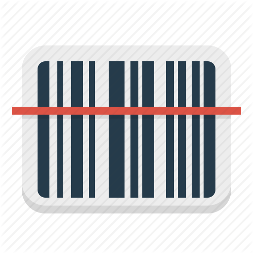

<ion-header>
  <ion-toolbar color="ourtheme">
    <ion-title>Check in student</ion-title>

    <ion-buttons slot="start">
      <ion-button (click)="close()">
        <ion-icon size="medium" name="arrow-back-outline"></ion-icon>
      </ion-button>
    </ion-buttons>
  </ion-toolbar>
</ion-header>

<ion-content>

  <ion-card  (click)="scan()" button style="width: 200px; height: 200px; margin: auto; margin-top: 25vh;border-radius: 20px; padding: 2px; border: 1px solid #0a4694">
    
  </ion-card>

</ion-content>
